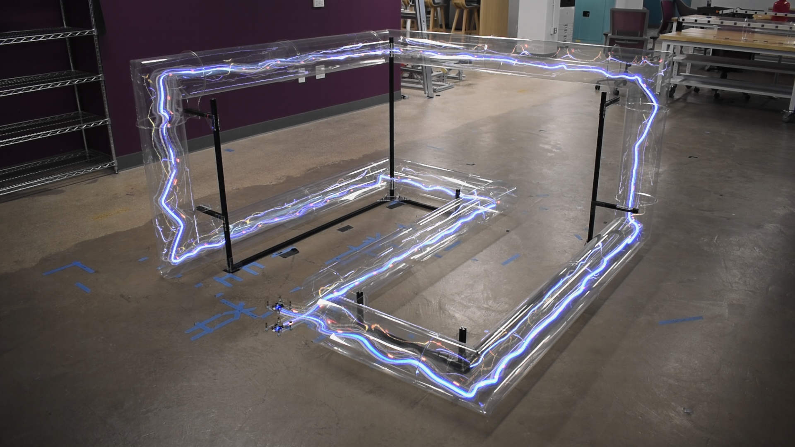

F1TENTH Autonomous Racing
Full autonomy stack on a 1/10-scale race car: localization, SLAM, control,sim-to-real policy transfer, and online adaptation.
F1TENTH Autonomous Racing Platform
A complete autonomy stack running on a 1/10-scale autonomous race car, built on a Jetson AGX Orin with ROS2 Humble, a ZED Mini stereo camera, and a VESC motor controller.
What I built
- Dual-EKF localization stack using
robot_localizationfusing wheel odometry, IMU, and lidar based particle filter. - MPPI controller for trajectory following and obstacle avoidance.
- Deployed Reinforcement Learning policies for autonomous racing with online adaptation module that collects data and sends it to an ofline server for the policy to improve on and recive the new weights
- Sim-to-real PPO policy transfer using a frame-skip curriculum and direction randomization during training.
foxglave_visualization, a ROS2 companion package for the mapping and post-processing workflow.
Notable problem solved
The VESC driver publishes odometry with a zero covariance matrix, which silently breaks EKF fusion. I wrote odom_cov_fixer.py to inject realistic covariance values before the message reaches the filter.